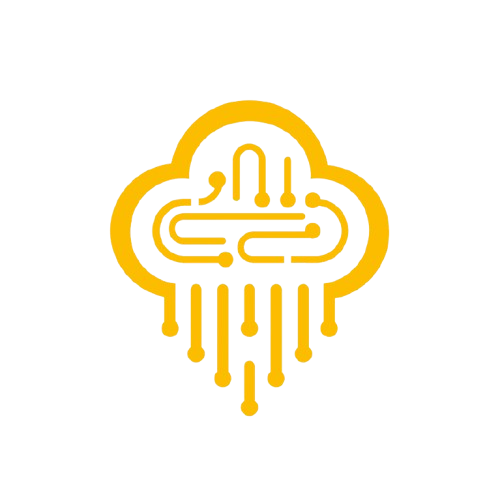
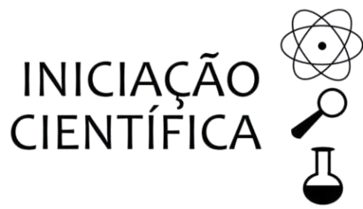

Fui durante algum tempo líder do social e ajudante do marketing da equipe de FRC (First Robotics
Competicion)
CyberRain #9611, onde aprendi muitas coisas que como design e trabalho em equipe, além de ter conseguido
desenvolver
diversos projetos como o "Manual STEAM" a qual tive o prazer de coordenar e de ter sido o líder de
criação do projeto, e
o principal escritor e redator do mesmo.
Porém fui participante da equipe
apenas durante a temporada REEFSCAPE do ano de 202, logo após já minha primeira temporada eu me retirei
da equipe pela minha
questão de que eu já não tinha mais idade para
participar, considerando que quando completei 17 anos eu passei da idade máxima de um competidor

Graças a Iniciação Cientifica, tive a oportunidade de poder pela primeira vez escrever um artigo
cientifico. Para conseguir seguir em duas areas que gosto muito, programação e educação, me dediquei
a escrita de artigos cientificos voltados para a educação utilizando de jogos sérios, onde para ensinar sobre
mudanças climaticas criei o projeto "Orbis", onde meu protagonista "Silva"